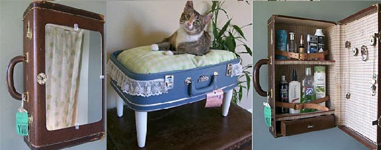

(Objetos Funcionais )
Se você já conhece outras linguagens de programação,
talvez ajude saber que JavaScript é uma lin�guagem
de
alto
nível,
dinâmica, interpretada, conveniente para estilos de programação
orientados a objetos e funcionais.

Algumas pessoas utilizam, por exemplo, velhos móveis e objetos para outros fins. Na internet é possível
encontrar um
gaveteiro que foi transformado em um criativo jardim, um ralador que foi transformado em porta-chaves e uma mala
que
virou um belo porta objetos de banheiro. Pesquise e solte a sua criatividade.
proxima pagina 4